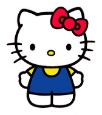

About Hello Kitty
Hello Kitty is a fictional character produced by the Japanese company Sanrio, created by Yuko Shimizu and currently designed by Yuko Yamaguchi.
She often wears blue overalls with a yellow shirt on top.
Facts About Hello Kitty
She was born in the suburbs of London, England on November 1st.
Her height is described as five apples and her weight as three apples.
She is good at baking cookies and loves Mama's homemade apple pie.
She likes to collect cute things and her favourite subjects in school are English, music and art.
Hello Kitty's friends
Hello Kitty has a lot of friends, My Melody, Cinnamoroll, Kuromi... Theese characters are all from Saniro company.